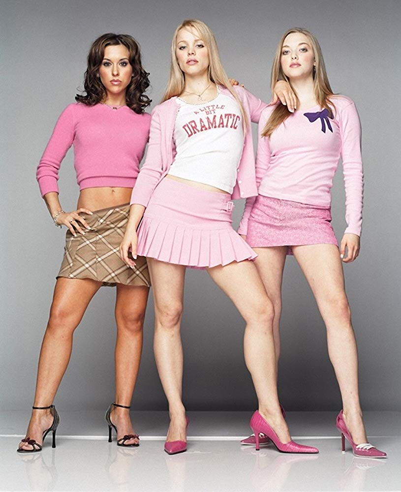

Malificent, also known as 'The mistress of evil' is a disney villain. Her original debute was in 1959 and became a live action in 2014 played by Angelina jolie. In both movies she was portrayed as a dark fairy. She is powerful and even has the ability to become a fire-breathing dragon she is known for having horns and wearing dark robes
Number 9: Gaston
Gaston is the villain in Beauty and the Beast, he was created as the 'perfect villain'. However he doesn't think he is evil, in the movie he is portrayed as a narcisist and a popular town hero.He has a side kick like many other villains who praises him against his selfih and crul character. he is shown as physically strong as he is lifting weights
Number 8: Regina George

Regina George is the villain in Mean Girls, she was played by Rachel McAdams in the original in 2004, and Reneé Rapp in the new musical movie.She is an iconic 'Queen bee' and is the main antagonist and leader of 'the plastics'.She made the rules of the 'plastics' such as 'On wednesday we wear pink'She is known for being being beautiful and influentual at her school